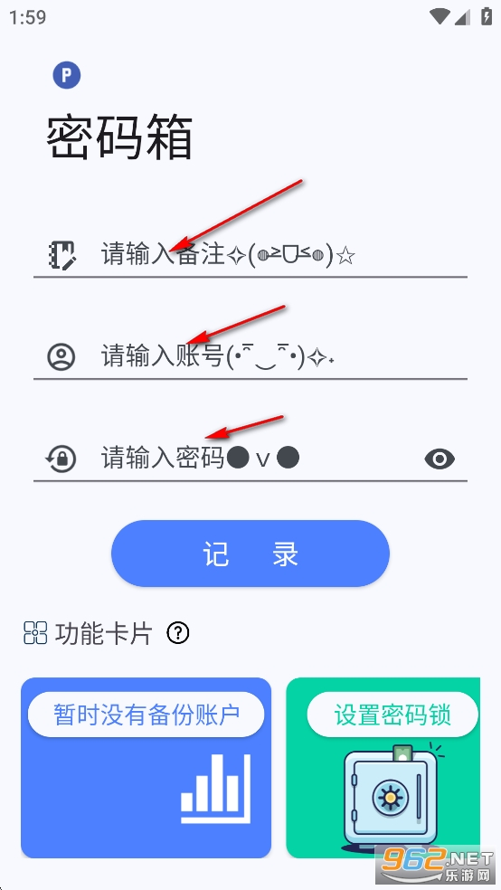
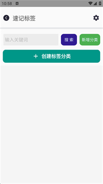

把一个手机工具箱嵌进我每周的外包测试工作流
外包测试账号多、配置散，以前密码记不住、便签到处贴。把 Sparkle 插进去之后，账号管理、临时配置、甚至摸鱼休息都进了同一条链。
我每周要做一批外包测试活：给客户的小网站注册账号、跑功能测试、改密码、注销垃圾号。项目最多的时候同时挂着五六家，每家三五个测试账号，加上自己的邮箱、云服务、开发环境账号——前前后后三四十条记录。
以前的流程是这样的：注册完账号密码随手抄进微信的文件传输助手，改了密码就在微信里把那条消息删了重发一条新的；测试配置（API Key、临时 Token、回调地址）散落在便签、Excel、飞书文档三个地方；下班前要花十分钟把当天摸鱼刷的短视频记录清干净，不然手机被老板借去查东西就尴尬。
这套流程卡在哪？密码改了没同步，第二天登录就报错；配置在 A 便签还是 B 文档，靠翻历史消息；微信文件传输助手堆到一百多条，搜密码比记密码还慢。整个链条没有一个地方是可信的单一真相源。
Sparkle 工具箱原本是偶然在朋友手机上看到的密码箱模块，纯本地加密、不上传服务器，后来去Sparkle官网确认了一下——一个不用注册的本地工具箱，觉得比微信靠谱就装了。用了两天发现不止密码箱好用，整个应用的几个模块刚好能塞进我这条工作流的不同环节。
新流程：四步一条链
现在我的一周是这样跑的：
- 注册新账号 → 密码箱录入。Excel 里先铺好项目名和模块名，注册完拿到账号密码就进 Sparkle 的密码箱，按「项目名-模块-账号类型」的格式填备注，账号密码原样录入，点「记录」。应用按备注匹配更新，以后改密码直接搜备注、覆盖存就行，不用找条目编辑。
- 测试开始 → 速记标签管临时配置。API Key、回调地址、临时测试用的手机号这些东西，加密没那么敏感但需要快速查看——丢进速记标签模块，比密码箱灵活，不用每次解锁。重要的配置（比如生产环境密码）还是走密码箱，临时的走速记，两条通道分清楚。
- 中途休息 → 赛博魔方代替短视频。外包活有时候卡点，等服务器部署要半小时、等客户反馈要一小时，以前忍不住刷短视频，一刷就超时。现在开个赛博魔方转两下，开发者自己都说"同事以为你在沉思架构优化"——摸鱼神器的自嘲梗，恰恰戳中了我这种需要装模作样又不能真上瘾的场景。
- 周六下班 → 导出备份到网盘。每周六晚上把密码箱整箱导出一份，文件名带日期，丢到自己的网盘转存。速记标签当天的临时条目清理掉，有用的转飞书文档归档。这样换手机、手机丢了、应用被卸载，都不会丢记录。
实操里最容易断链的两个环节
这套流程跑了三周，有两个地方一开始容易出问题，调完就顺了。
第一个是密码箱的导出节奏。第一次导出是临时想起来才导，后来改成每周六固定时间，手机设置了提醒。导出完立刻检查文件大小——有一次传输到网盘被截断，导入时报错说文件损坏，重传一遍才好。备份文件必须离开旧手机才算安全，这条线我后来也延伸到了换机迁移上：去年年底换手机，去Sparkle文档翻了完整的换机流程，按导出→搬文件→新机导入→核对四步走，旧机数据留到新机用满一周才删，没出任何差错。
第二个是速记标签和飞书文档的边界。一开始所有配置都丢速记，结果周末清理的时候翻得累。后来定了条规则：测试当天要用的放速记，需要长期留存的走飞书文档。速记标签只当临时工作台，不归档。这样周末清理只花五分钟，不用逐条甄别。

效果与边界
省了多少事？以前每周花十分钟同步密码和配置，现在这步没了——密码箱是唯一的密码源，速记是临时配置源，飞书是长期文档源，三处各管各的不交叉。改密码也不用删微信消息重发，搜备注直接覆盖存，少了两次手动复制。
但这套流程不是所有人都划算。如果你只有三五个固定账号（邮箱、微信、支付宝），装 Sparkle 再配这条链反而显得重——真要的话，从下载拿就行，不用绕弯子。它适合的场景是：账号数量在十五个以上、经常需要改密码、换手机频繁、同时跑多个项目的人。或者像我这样，外包活让账号和配置的数量呈季节性波动，忙的时候三四十条，闲的时候只剩自己的私人账号。
还有一点要提：这是纯本地的方案，没有云端同步。好处是数据不会被拖到任何服务器，不用担心账号被盗连累密码箱；代价是卸载即清空，换机必须走导出导入流程。我自己是接受这个代价的——毕竟外包账号大多是临时的，但如果里面有长期自用的重要账号，导出节奏要再加密。
周边工具的配合
这条链还有几个上下游工具值得一提：Excel 用来批量管理测试账号模板，飞书文档用来存长期测试报告和通用配置模板，网盘用来每周备份 Sparkle 的导出文件。Sparkle 本身不做这些事，但它把"账号密码"这个最核心也最容易乱的环节管住了，其他环节才能各司其职。
壁纸站模块我没放进工作流——它是娱乐向的，跟生产力没直接关系。但赛博魔方、谷歌恐龙训练营和动态几何这三个摸鱼模块，反而成了工作流里的"休息定时器"：转五分钟魔方，关掉继续干活，比刷短视频好收得多。开发者把它们戏称为"三大摸鱼神器"，我倒觉得它们是"防止摸鱼失控的工具"。

什么时候别装它
最后说句实在的：如果你的密码和配置只记在脑子里，或者只有固定的三五条，不值得专门装一个工具箱来管理。Sparkle 的价值在于它把"密码箱 + 速记 + 摸鱼休息 + 换机迁移"这几样凑成了一套，单拎某一样出来可能都有更好的专门工具。但对于我这种外包测试场景，它是够用、够轻、够安全的组合——一个安装包，一个解锁密码，就把工作流里最散的那个环节管住了。
这些模块的代码和说明我分别同步到了GitHub、Gitee和GitCode三个平台，国内访问不方便的时候直接换镜像就行，想自己改或者二次开发的也方便。